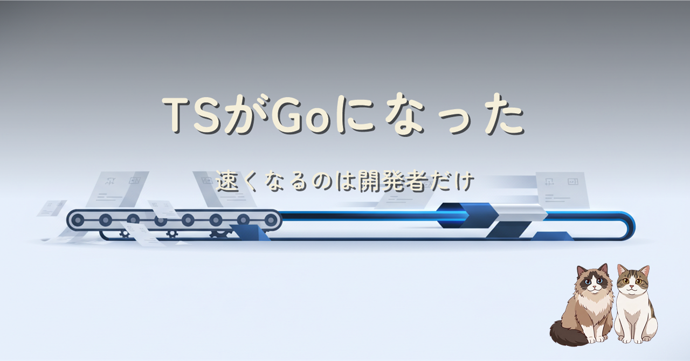

2026 年 7 月 8 日、TypeScript 7.0 が GA になりました。コンパイラの Go ネイティブ化で型チェックは約 10 倍。でも TypeScript 製アプリのエンドユーザーは 1 ミリも嬉しくなりません。速くなるのは開発者のビルド・型チェック・エディタの待ち時間です。制限 3 つと、既存 3 か月後・新規は最初から 7 という導入判断を整理しました。
TypeScript のコンパイラが JavaScript 実装から Go ネイティブ実装（コードネーム Corsa、通称 tsgo）に置き換わった TypeScript 7.0 の解説です。10 倍高速化の中身（ネイティブ化と並列化が半分ずつ）、エンドユーザーへの影響がゼロである理由（出力される JS は同じ）、GA 時点の制限 3 つ（安定 API 未公開・Vue 系未対応・emit は ES2021 まで）を一次情報付きで整理し、最後に「新規は最初から 7、既存は 3 か月後」という自分の導入判断とその理由を書いています。